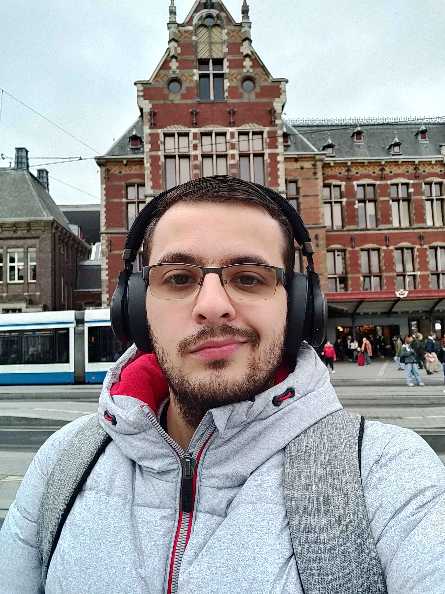
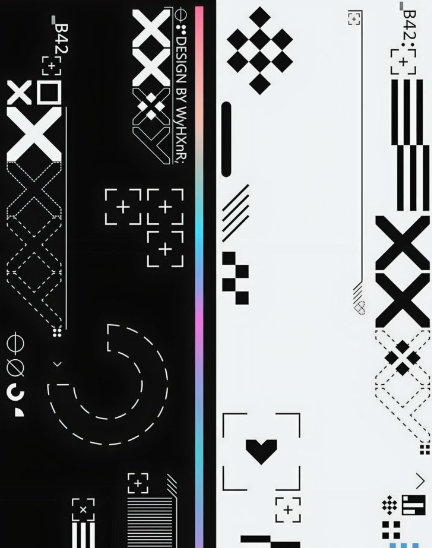

I aspire to pursue a career in computer science, with an interest in research, design, and realisation of both front-end and backend software development. I aim to continuously deepen my knowledge in developing various programming languages and frameworks, and to apply my programming experience to the management and practical execution of such projects. I am committed to continuous learning and improvement.
I’m a software developer and designer with experience creating interactive tools and immersive environments. I designed and built a VR dashboard for the NOLAI project, helping researchers monitor and analyze educational VR sessions for children, with a focus on usability, privacy, and data visualization. I also contributed to the Limescoop VR installation, optimizing Unity environments, animating 3D models, and enhancing user interaction for a public VR experience.
During my Bachelor of Applied Science in Computer Science at Hogeschool Leiden, I specialized in Interaction Technology. The program focused on human-centered design research and realization, and full-stack development. I participated in hands-on projects involving the design and development of different applications, combining technical skills with user experience insights.
- Unity/C#
- Python
- Laravel
- ReactJS
- HTML/CSS/JS
- Human Computer Interaction Research
- Creative
- Flexible
- Team player
- Honest
- Reliable
- Eager to Learn
- Football
- Gaming
- Boardgames
- Listening to music
- Developing personal projects
- Collecting cards
- I built my own interactive board game from scratch
- Before diving into computer science, I studied clinical chemistry
- I spent a year working before starting my bachelor’s degree
- I played football for 16 years, starting at age 4 and representing 4 different clubs
- I go on vacation every year, but I’ve never traveled outside Europe
- Hip-hop is my favorite music genre, and I listen to it every chance I get
- FromSoftware makes the best games—and yes, you can quote me on that